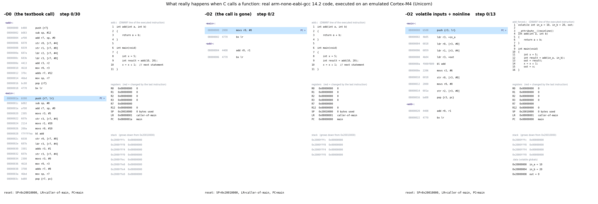
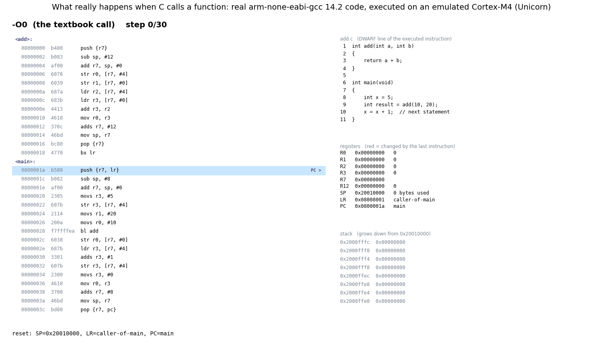

add.c is compiled with arm-none-eabi-gcc 14.2 for Cortex-M4,
the machine code runs in the Unicorn CPU emulator, and every register, stack word and PC value is read back from the emulator
after each instruction. Yellow = instruction just executed, blue = PC, red = state changed, grey stack rows = dead frames.Same C, same CPU, only the -O flag changes. The -O2 build is done after 2 instructions
(movs r0, #0; bx lr) while -O0 is still setting up its stack frame. -O0 finishes after 30 instructions, the forced call after 13.

Arguments land in R0 and R1, bl add writes the return address into LR, add spills both arguments to
its stack frame and reloads them, the sum comes back in R0, and bx lr returns. Watch the dead frame of add
(greyed rows below SP) still holding 10 and 20 after the return.

git clone https://github.com/zuwasi/cortex-m-call-anatomy, pip install -r requirements.txt,
then python callviz.py --compare O0 O2 forced. Space plays and pauses, the arrow keys step one instruction at a time.